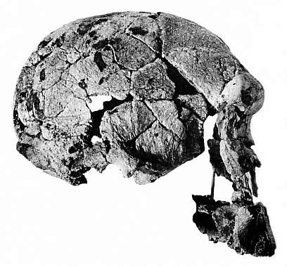

Crâne KNM-ER 1470

KNM-ER 1470, Homo habilis (ou Homo rudolfensis)
Discovered by Bernard Ngeneo in 1972 at Koobi Fora in Kenya (Leakey, 1973). Estimated age is 1.9 million years. This is the most complete habilis skull known. Its brain size is 750 cc, large for habilis. It was originally dated at nearly 3 million years old, a figure that caused much confusion as at the time it was older than any known australopithecines, from whom habilis had supposedly descended. A lively debate over the dating of 1470 ensued (Lewin, 1987; Johanson and Edey, 1981; Lubenow, 1992). The braincase is surprisingly modern in many respects, much less robust than any australopithecine skull, and also without the robustness and large brow ridges typical of Homo erectus. The face, in contrast, is extremely large and robust.Ces dernières années, un nombre croissant de scientifiques ont classé ce crâne en tant que Homo rudolfensis. (Si 1470 est lié au fossile nouvellement découvert WT 40000 (Kenyanthropus platyops) auquel il présente certaines ressemblances revendiquées, il pourrait éventuellement être réaffecté au genre Kenyanthropus.)
Les créationnistes semblent être assez partagés sur le fait que 1470 soit un singe ou un humain. À l'origine, Gish (1979) pensait qu'il s'agissait d'un humain, puis plus tard (1985), il décida qu'il s'agissait d'un singe. L'opinion de Lubenow (1992) selon laquelle il s'agissait d'un humain semblait gagner du terrain au début des années 1990, mais plus récemment, d'autres créationnistes tels que Mehlert (1996) et Hartwig-Scherer ont décidé qu'il s'agit simplement d'un singe à gros cerveau.
Leakey R.E. (1973) : Preuves d'un hominidé avancé du Plio-Pleistocène d'East Rudolf, au Kenya. Nature, 242:447-50.
Arguments créationnistes sur 1470
Cette page fait partie des FAQ sur les hominidés fossiles de l'Archive TalkOrigins.
Page d'accueil |
Espèces |
Fossiles |
Créationnisme |
Lecture |
Références
Illustrations |
Nouveautés |
Retour d'information |
Recherche |
Liens |
Fiction
http://www.talkorigins.org/faqs/homs/1470.html, 31/03/2001
Copyright © Jim Foley
|| Envoyez-moi un email